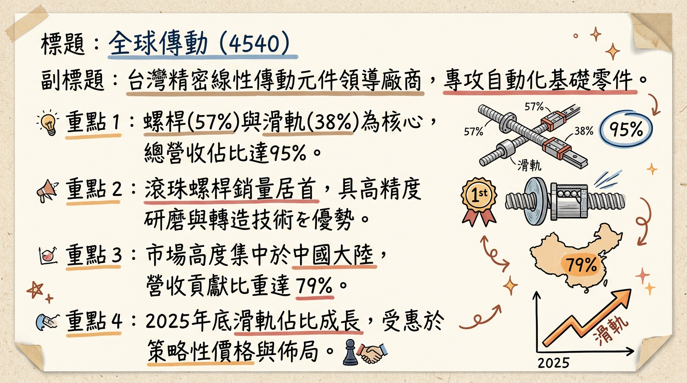
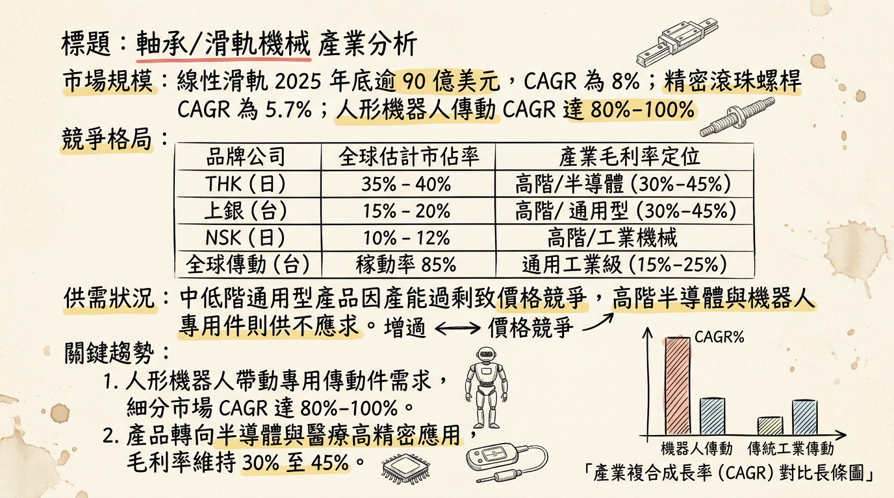
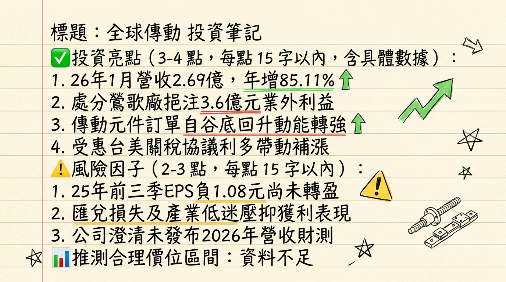

4540 全球傳動 深度研究報告
一句話摘要
全球傳動（TBI MOTION）正處於從傳統機械元件向「人形機器人關鍵零組件」轉型的轉折點；隨著 2026 年 1 月營收年增 85% 展現強勁復甦，配合半導體封裝訂單與機器人驗證進度，2026 年有望達成全面轉虧為盈。
公司概覽
全球傳動為台灣精密線性傳動元件領導廠，專精於自動化設備核心零件。
業務與產品線結構
| 產品類別 | 營收佔比 (2025 Q3) | 主要應用與特性 |
|---|
| 滾珠螺桿 | 57% | 主力產品，轉造級市佔高，具規模經濟優勢。 |
| 線性滑軌 | 38% | 佔比呈上升趨勢，主打高順暢性與價格競爭力。 |
| 滾珠花鍵 | 5% | 適用於高扭矩、高速往復運動環境。 |
| 其他（單軸機器人等） | <1% | 整合型模組產品。 |
中國大陸 (79%)、台灣 (8%)、亞洲其他地區 (8%)、其餘地區 (5%)。
核心競爭優勢
高性價比轉造技術： 擅長量大且具成本優勢的轉造級螺桿，在中端自動化市場具備高競爭力。
人形機器人技術突破： 成功研發應用於機器人靈巧手的「微型螺桿」（最小外徑 3mm）及應用於肢體的「線性執行器」。
半導體供應鏈切入： 成功進入台灣與中國半導體後段封裝設備鏈，避開低價競爭的通用型市場。
財務分析
月營收趨勢表
| 月份 | 營收金額 (億元) | 月增率 MoM | 年增率 YoY | 營運備註 |
|---|
| 2026/01 | 2.69 | -0.95% | +85.11% | 訂單自谷底回升，需求強勁。 |
| 2025/12 | 2.72 | +12.99% | -5.92% | 自結單月 EPS 0.13 元成功轉盈。 |
| 2025/11 | 2.40 | -6.95% | +21.15% | 產業需求緩步復甦。 |
| 2025/10 | 2.58 | +11.78% | +81.31% | 去年基期較低。 |
| 2025/09 | 2.31 | +6.22% | +34.08% | |
| 2025/08 | 2.18 | -3.54% | +26.42% | |
季度與年度數據
- 2024 實際值： 營收 22.94 億元，EPS -4.97 元。
- 2025 預估值： 營收 25.59 億元，EPS 介於 -1.02 元至 -0.62 元。
- 2026 展望： 管理層與法人一致看好達成「轉虧為盈」，目標營收雙位數成長。
法說會重點
- 訂單能見度： 目前在手訂單約 2.5 至 3 個月，較去年上半年顯著改善。
- 稼動率： 產線稼動率回升至約 85%。
- 中國策略： 推出新品牌 「MOSION X」 鎖定中高階市場；為避開 ECFA 關稅（6-8%），規劃將 15-30% 後段產能移往蘇州。
- 蘇州新廠： 投資 2,000 萬美元，預計 2027 年正式投產，屆時產能將佔總產值 30%。
券商觀點
| 券商名 | 目標價 | 評等 | 日期 | 2026 EPS 預估 |
|---|
| 兆豐證券 | 60 元 | 看多 | 2026/02/26 | 轉盈 (未給確數) |
| 宏遠證券 | 60 元 | 看多 | 2026/01/30 | 轉盈 |
| 群益證券 | 56.5 元 | 看多 | 2026/01/29 | 轉盈 (營收預估 28.36 億) |
財報深度分析
利潤率趨勢表格
| 指標 | 2025 Q3 | 2025 Q2 | 2025 Q1 | 2024 Q4 |
|---|
| 毛利率 | 4.3% | 8.0% | 9.0% | 7.5% |
| 營業利益率 | -19.02% | -11.0% | -14.0% | -12.0% |
| 稅後淨利率 | -13.45% | 7.2%* | -16.0% | -18.0% |
| 單季 EPS | -0.81 元 | 0.42 元* | -0.69 元 | -- |
註：2025 Q2 獲利主因為處分鶯歌廠房獲利 3.6 億元挹注。*
營運指標分析
- 存貨去化： 存貨週轉天數從 2023 年底的 458 天 大幅降至 2025 Q3 的 195.12 天，顯示庫存已回歸健康水位。
- 財務結構： 負債比率由 2024 年中的 142% 降至 2025 Q3 的 112%，財務體質受業外收益挹注而改善。
股權異動與資本結構
- 申報轉讓： 近一年無重大董監事持股異動，股權結構穩定。
- 可轉換公司債 (CB)： 全球傳動二 (45402) 已於 2025/12/12 到期並清償，目前無流通在外的 CB，減輕潛在稀釋壓力。
- 庫藏股： 近年無新執行計畫。
產業分析
競爭格局表格
| 公司名稱 | 市佔率 (估) | 核心優勢 | 2026 展望 |
|---|
| THK (日本) | ~30% | 全球高階市場龍頭 | 穩健增長 |
| 上銀 (2049) | ~18% | 產品線最廣、半導體佈局領先 | 需求強勁 (毛利 >27%) |
| 全球傳動 (4540) | <5% | 轉造級螺桿性價比高 | 谷底反彈轉盈 |
| 直得 (1597) | <3% | 微型滑軌技術領先 | 微幅成長 |
近期催化劑
【利多】1 月營收爆發： 年增 85.11%，確認產業進入上升軌道。
【利多】人形機器人驗證： 靈巧手專用螺桿與線性執行器樣品已進入客戶整機測試階段。
【利多】台美關稅協議： 市場預期降稅將帶動原本流向日、韓廠商的訂單回流台灣。
【利空】ECFA 衝擊： 輸陸產品被課 6-8% 關稅，壓抑短期毛利表現。
⭐ 成長動能時間軸
- 2025 Q4： 完成人形機器人線性執行器樣品，處分鶯歌廠房獲利入帳。
- 2026 Q1： 12 月與 1 月營收動能確認，靈巧手微型螺桿多家客戶驗證中。
- 2026 Q3： 預期半導體封裝訂單貢獻放大，單季獲利挑戰常態性轉盈。
- 2026 Q4： 蘇州新廠完工，開始設備進駐與小量試產。
- 2027： 蘇州廠量產（目標產能佔比 30%）與 人形機器人零組件量產。
2026 展望
1. AI 帶動半導體後段封裝設備需求。
2. 人形機器人題材從「概念」進入「小量出貨」。
3. 存貨去化完畢，產能利用率回升帶動規模經濟。
1. 中國市場佔比過高（近 80%），受中國宏觀經濟影響極大。
2. 毛利率回升速度若慢於預期（目標重回 15-20%）。
投資結論
營運轉折： 經歷 2024-2025 年的深度虧損與庫存去化，2026 年初營收動能已確認產業谷底已過。
機器人純度提升： 微型螺桿與線性執行器已進入驗證，為 2027 年爆發性成長鋪路。
評價回升： 隨營收回溫與 12 月單月轉盈，市場估值正從 P/B 底部向上修復。
建議目標價： 參考券商共識，短期目標價區間為 55 - 60 元，若 2026 Q1 毛利率能顯著回升至 10% 以上，評價具進一步上修空間。
本報告由 AI 自動產生，資料來源為公開網路資訊，僅供參考，不構成投資建議。產生時間：2026-03-01 04:03
📊 資訊卡


